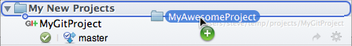
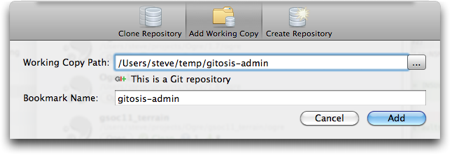

Bookmarks: adding your existing working copy
You have a couple of options to add a new bookmark to your list from an existing working copy source folder you have on your hard drive:
Drag & drop the folder from Finder on to SourceTree

You can drop the new repository anywhere in the hierarchy of bookmarks
If the folder isn't a Mercurial or Git repository yet, SourceTree will open the 'Create New Repository' window for you to create one for this source folder.
Use the 'Add Repository' Button
Select where you want to add the new repository, then click 'Add Repository' and select the 'Open Working Copy' option.

You can type in the path, or use the disclosure button to browse for it. SourceTree will validate the folder and show what type of repository it is you're point at.
See also
Bookmarks overview
Cloning a repository
Creating a blank repository
Organising your bookmarks